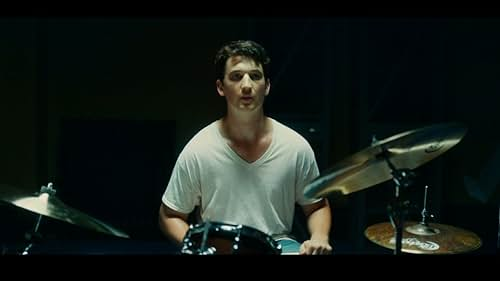

Merhaba, Ben Onurcan Akkoc! Izmir'de yasiyorum. Davul calmayi ve film izlemeyi cok seviyorum. Ayni zamanda Web3 ve Web development ile ilgileniyorum. Bu nedenle suanda Patika+ Frontend Web Development Bootcamp'ine devam etmekteyim.
Whiplash, genç bir müzisyenin öykünü anlatıyor. Küçük yaşlardan itibaren bateri çalmaya başlayan Andrew, işinde tam anlamıyla bir usta olmak ister. Üniversite tercihinde de ülkenin en iyi müzik okulu olarak gördüğü Shcarffer Konservatuarı'na girer. Henüz 19 yaşındadır ama dersler harici var gücüyle antrenman yapar. Bir gün, okulun en sert hocalarından biri olan caz duayeni Terence Fletcher'ın dikkatini çeker. Fletcher Andrew'ü okulun en parlak öğrencilerinin seçildiği ve sürekli yeni yarışmalara hazırlanan "studio band"e seçer. Başarısı kadar acımasızlığıyla da ün yapmış olan Fletcher, Andrew'un kapasitesinin sonuna kadar kullanmadan asla başarmış saymayacaktır. Genç bateristin önünde sadece mesleki bir test değil, psikolojik bir sınav da vardır... Senaristliğini ve yönetmenliğini Damien Chazelle'in üstlendiği filmin başrolünde Miles Teller yer alıken karşısında kendisine J.K. Simmons eşlik ediyor.
